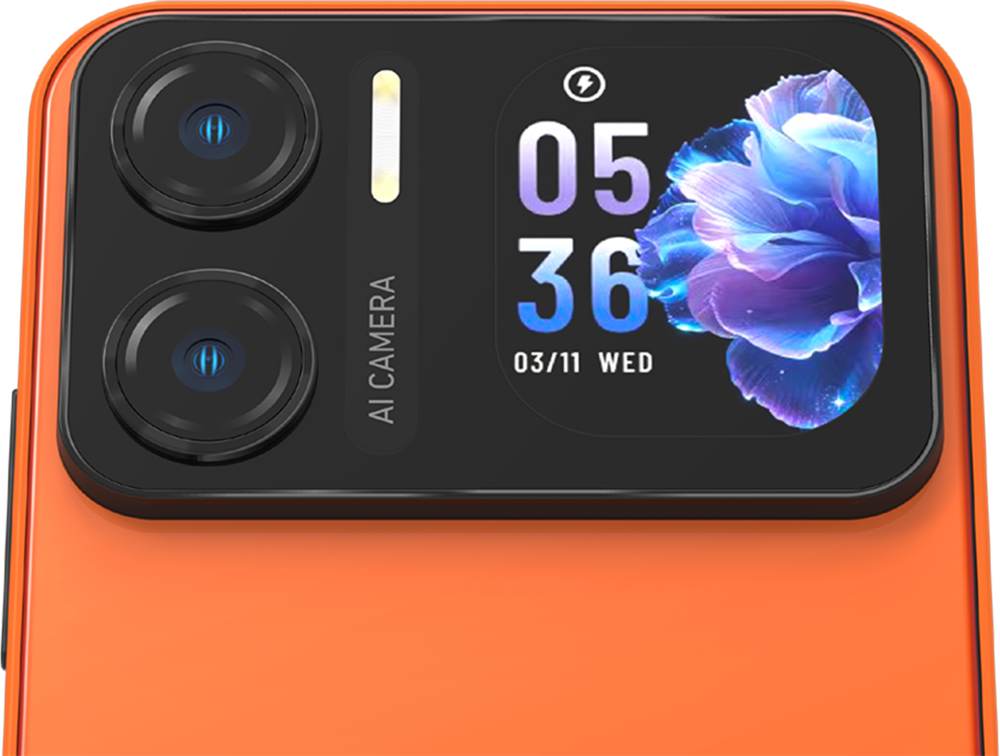
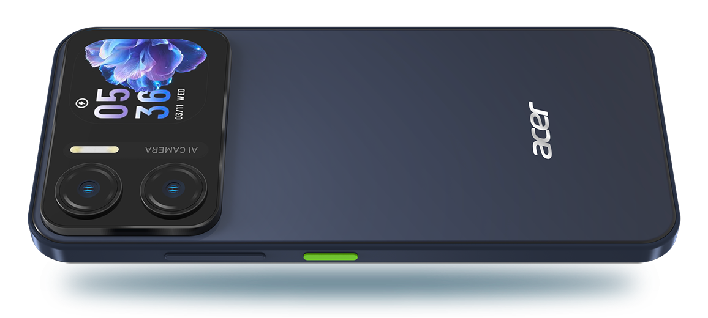

Acer Sospiro A15 출시 소식
작년 인도에서 두 모델을 선보인 이후 한동안 조용했던 Acer가 최근 Acer Mobile LATAM을 통해 새로운 Acer Sospiro A15를 공개했습니다. 이 기기는 독특한 듀얼 디스플레이 디자인, Android 16 탑재, 그리고 6400만 화소의 후면 카메라를 특징으로 합니다.
Acer Sospiro A15 사양 및 기능
Acer Sospiro A15는 물방울 노치가 적용된 6.67인치 HD+ IPS 디스플레이를 탑재했으며, 120Hz 주사율을 지원합니다.
이 기기의 핵심은 후면에 위치한 1.88인치 TFT 보조 디스플레이입니다. 이 화면은 알림 확인 및 음악 제어 기능을 제공하며, 메인 카메라를 활용해 셀피를 촬영할 때 뷰파인더로도 작동합니다.
주요 하드웨어 사양은 다음과 같습니다.
- 프로세서: Unisoc T615 (5G 미지원)
- 메모리 및 저장공간: 6GB RAM, 128GB 내장 메모리 (최대 14GB 가상 RAM 확장 지원)
- 확장성: microSD 카드를 통해 최대 1TB까지 용량 확장 가능
- 운영체제: Android 16
- 배터리 및 충전: 5,000mAh 배터리, 18W 고속 충전
카메라 시스템
Acer Sospiro A15는 강력한 카메라 구성을 갖추고 있습니다.
- 후면 카메라: 6400만 화소 AI 듀얼 카메라, LED 플래시 포함
- 전면 카메라: 1,600만 화소 셀피 카메라, 전용 플래시 포함
특히 후면 디스플레이를 활용하여 메인 후면 카메라로 더욱 높은 품질의 셀피를 촬영할 수 있는 기능을 제공합니다.
연결성 및 기타 기능
다양한 연결 옵션과 편의 사양을 포함하고 있습니다.
- 네트워크: 듀얼 밴드 Wi-Fi, Bluetooth 5.0, VoLTE, ViLTE
- 기타 기능: NFC, GPS, FM 라디오
- 포트 및 단자: USB Type-C, 3.5mm 헤드폰 잭
- 내구성 및 보안: IP64 등급(먼지 및 물방울 저항), 측면 지문 인식, 얼굴 인식
가격 및 출시 정보
Acer Mobile LATAM은 공식 웹사이트에 Sospiro A15를 등록했으며, 멕시코를 포함한 라틴 아메리카 일부 시장을 대상으로 합니다. 현재 정확한 가격이나 판매 일정은 공개되지 않았으며, 제품 색상은 Naranja Vibrante(오렌지)와 Azul Profundo(블루)로 제공됩니다.
총평
Acer Sospiro A15는 독특한 후면 보조 디스플레이를 통해 사용자 편의성을 높이고, 최신 Android 16과 고화소 카메라 시스템을 결합한 모델입니다. 특히 후면 디스플레이와 메인 카메라의 연동은 셀피 촬영 경험을 강화하는 핵심적인 특징입니다.
Acer Sospiro A15 Announcement
After a period of silence following the launch of two models in India last year, Acer has recently unveiled the new Acer Sospiro A15 through Acer Mobile LATAM. This device features a unique dual-display design, runs on Android 16, and is equipped with a 64MP rear camera.
Acer Sospiro A15 Specifications and Features
The Acer Sospiro A15 features a 6.67-inch HD+ IPS display with a waterdrop notch and supports a 120Hz refresh rate.
The core highlight of the device is the 1.88-inch TFT secondary display located on the back. This screen provides functionality for checking notifications and controlling music, and it also serves as a viewfinder when using the main camera to take selfies.
Key hardware specifications include:
- Processor: Unisoc T615 (No 5G support)
- Memory and Storage: 6GB RAM, 128GB internal storage (supports up to 14GB virtual RAM expansion)
- Expandability: Expandable up to 1TB via microSD card
- Operating System: Android 16
- Battery and Charging: 5,000mAh battery, 18W fast charging
Camera System
The Acer Sospiro A15 is equipped with a powerful camera configuration.
- Rear Camera: 64MP AI Dual Camera, includes LED flash
- Front Camera: 16MP selfie camera, includes dedicated flash
Notably, the device allows users to take higher-quality selfies by utilizing the rear display as a viewfinder for the main rear camera.
Connectivity and Additional Features
The device includes various connectivity options and convenience features:
- Network: Dual-band Wi-Fi, Bluetooth 5.0, VoLTE, ViLTE
- Other Features: NFC, GPS, FM Radio
- Ports and Jacks: USB Type-C, 3.5mm headphone jack
- Durability and Security: IP64 rating (dust and water drop resistant), side fingerprint recognition, face recognition
Price and Availability
Acer Mobile LATAM has listed the Sospiro A15 on its official website, targeting select markets in Latin America, including Mexico. The exact price and release schedule have not yet been disclosed. The device will be available in Naranja Vibrante (Orange) and Azul Profundo (Blue).
Overall Review
The Acer Sospiro A15 is a model that enhances user convenience through its unique rear secondary display, combining the latest Android 16 platform with a high-resolution camera system. In particular, the integration between the rear display and the main camera significantly enhances the selfie experience.
Summary
The Acer Sospiro A15 is a new smartphone featuring a dual-display design that includes a 1.88-inch secondary screen for notifications and as a viewfinder. It runs on Android 16, features a 64MP main camera system, and offers robust durability with an IP64 rating.
Acer Sospiro A15の発表
昨年インドで2モデルを発表したのち、しばらく静かな期間を経ていたAcerは、最近Acer Mobile LATAMを通じて新型「Acer Sospiro A15」を発表しました。このデバイスは、ユニークなデュアルディスプレイ設計、Android 16の搭載、そして6400万画素の背面カメラを特徴としています。
Acer Sospiro A15の仕様と機能
Acer Sospiro A15は、ウォータードロップノッチを採用した6.67インチHD+ IPSディスプレイを搭載しており、120Hzのリフレッシュレートに対応しています。
このデバイスの核となるのは、背面に配置された1.88インチTFTサブディスプレイです。この画面は通知の確認や音楽の操作機能を提供し、メインカメラを使用して自撮り（セルフィー）を撮影する際のビューファインダーとしても機能します。
主なハードウェア仕様は以下の通りです。
- プロセッサ：Unisoc T615（5G非対応）
- メモリおよびストレージ：6GB RAM、128GB内蔵メモリ（最大14GBの仮想RAM拡張に対応）
- 拡張性：microSDカードにより最大1TBまで容量を拡張可能
- OS：Android 16
- バッテリーと充電：5,000mAhバッテリー、18W急速充電
カメラシステム
Acer Sospiro A15は強力なカメラ構成を備えています。
- 背面カメラ：6400万画素 AIデュアルカメラ、LEDフラッシュ搭載
- 前面カメラ：1600万画素セルフィーカメラ、専用フラッシュ搭載
特に、背面のサブディスプレイを活用することで、メインの背面カメラを使用してより高品質な自撮り撮影を行うことが可能です。
接続性とその他の機能
多様な接続オプションと便利な機能を備えています。
- ネットワーク：デュアルバンドWi-Fi、Bluetooth 5.0、VoLTE、ViLTE
- その他機能：NFC、GPS、FMラジオ
- ポートと端子：USB Type-C、3.5mmヘッドフォンジャック
- 耐久性とセキュリティ：IP64等級（防塵・防水）、サイド指紋認証、顔認証
価格および発売情報
Acer Mobile LATAMは公式ウェブサイトにSospiro A15を登録しており、メキシコを含むラテンアメリカの一部市場を対象としています。現時点で正確な価格や販売スケジュールは公開されていません。製品のカラーバリエーションはNaranja Vibrante（オレンジ）とAzul Profundo（ブルー）の2色展開となります。
まとめ
Acer Sospiro A15は、独自の背面サブディスプレイを搭載することで通知確認や自撮り時のビューファインダーとしての利便性を高めたモデルです。最新のAndroid 16と高画素なカメラシステムを組み合わせ、特に背面ディスプレイとメインカメラの連携による高度なセルフィー体験を提供します。
Acer Sospiro A15 Launch News
After a period of silence following the launch of two models in India last year, Acer recently unveiled the new Acer Sospiro A15 through Acer Mobile LATAM. This device features a unique dual-display design, runs on Android 16, and is equipped with a 64MP rear camera.
Acer Sospiro A15 Specifications and Features
The Acer Sospiro A15 features a 6.67-inch HD+ IPS display with a waterdrop notch and supports a 120Hz refresh rate.
The core highlight of this device is the 1.88-inch TFT secondary display located on the back. This screen provides functionality for checking notifications and controlling music, while also serving as a viewfinder when using the main camera to take selfies.
Key hardware specifications include:
- Processor: Unisoc T615 (No 5G support)
- Memory and Storage: 6GB RAM, 128GB internal memory (supports up to 14GB virtual RAM expansion)
- Expandability: Expandable up to 1TB via microSD card
- Operating System: Android 16
- Battery and Charging: 5,000mAh battery, 18W fast charging
Camera System
The Acer Sospiro A15 is equipped with a powerful camera configuration.
- Rear Camera: 64MP AI Dual Camera, includes LED flash
- Front Camera: 16MP selfie camera, includes dedicated flash
Notably, the device offers a feature where the rear display can be used as a viewfinder for the main rear camera to capture higher-quality selfies.
Connectivity and Other Features
The device includes various connectivity options and convenience features.
- Network: Dual-band Wi-Fi, Bluetooth 5.0, VoLTE, ViLTE
- Additional Features: NFC, GPS, FM Radio
- Ports: USB Type-C, 3.5mm headphone jack
- Durability and Security: IP64 rating (dust and water drop resistant), side fingerprint recognition, face unlock
Price and Availability
Acer Mobile LATAM has listed the Sospiro A15 on its official website for select markets in Latin America, including Mexico. Specific pricing and release dates have not been disclosed yet. The device will be available in Naranja Vibrante (Orange) and Azul Profundo (Blue).
Summary
The Acer Sospiro A15 distinguishes itself with a unique rear secondary display that serves as both a notification hub and a viewfinder for high-quality selfies using the main camera. Running on Android 16, it combines modern software with a robust hardware suite including a 64MP dual camera system and an IP64 rating.

